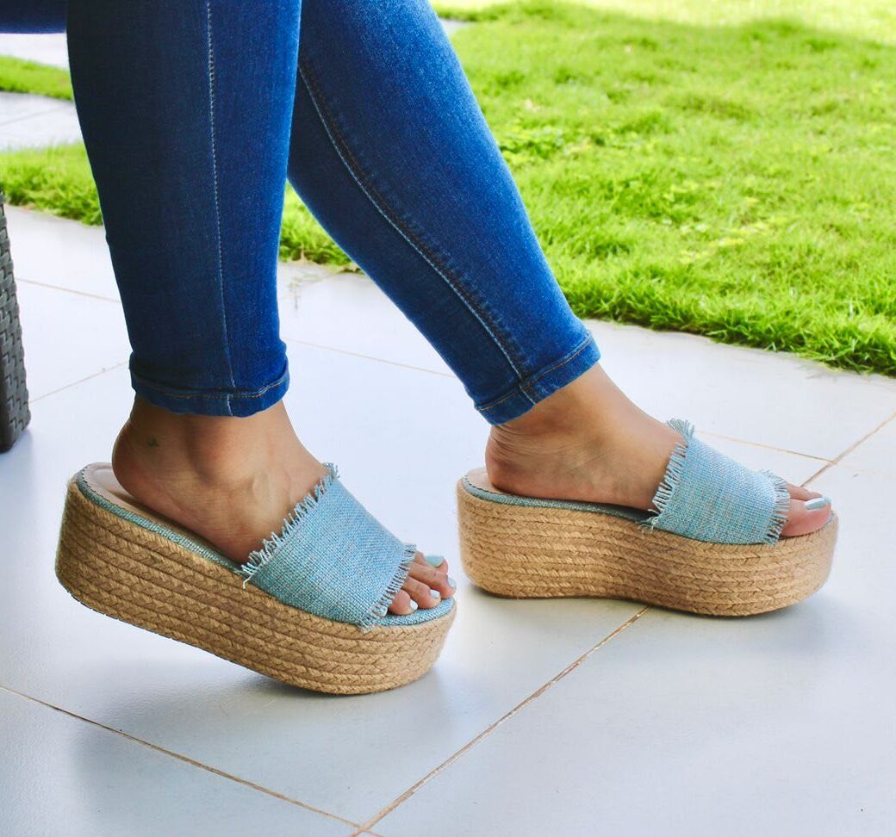
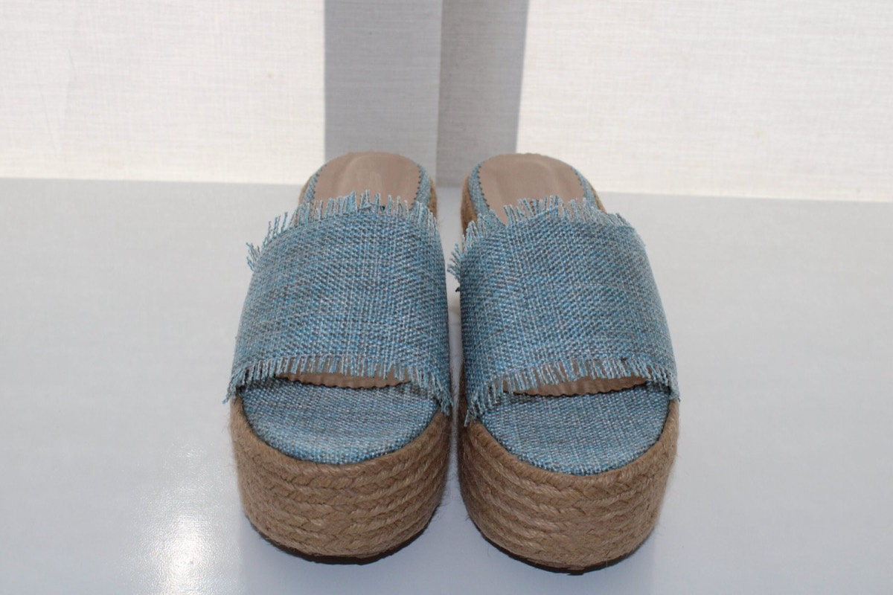
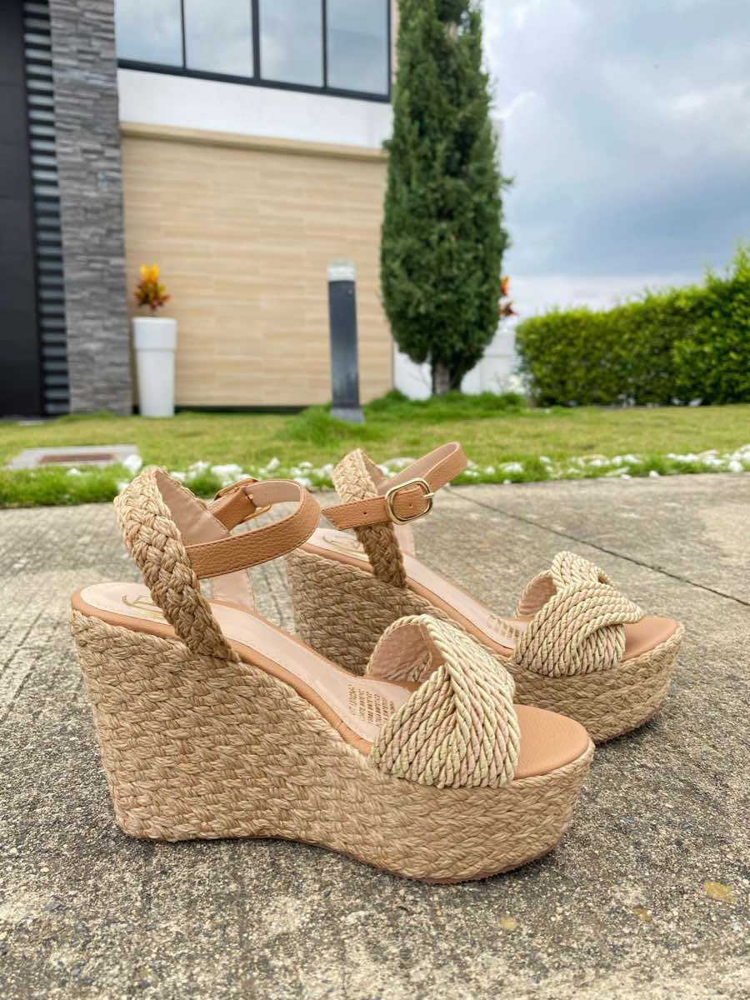
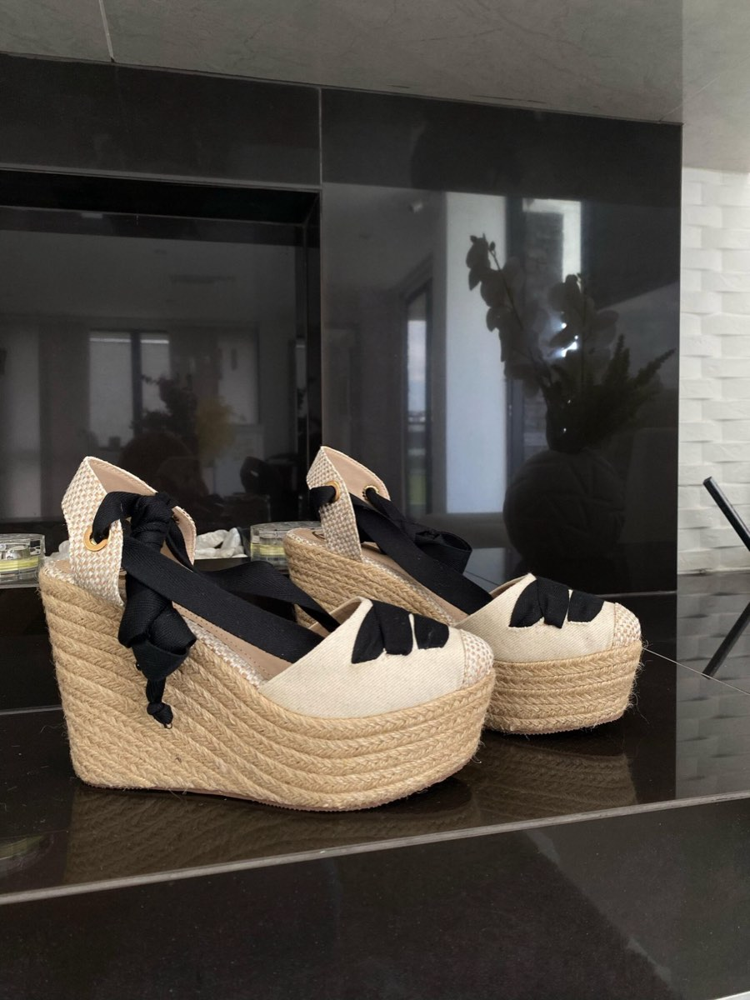

01 REF. 014

PLATAFORMAS / YUTE + JEAN
Oceano
Costa Rica
El jean azul se encuentra con la textura del yute. Una plataforma abierta que reúne dos materiales en la misma referencia.
BUCARAMANGA, COLOMBIA / CALZADO EN YUTE
Texturas para mirar de cerca.
Referencias para llevar a tu tienda.
Un punto de partida para tu marca.

EL ORIGEN IMPORTA
Nabay se presenta como fabricante de calzado hecho a mano en Bucaramanga. Su catálogo incluye referencias en yute y una opción de fabricación para otras marcas.
Conocer a Nabay en su web oficial ↗EL CUADERNO DE REFERENCIAS
Selecciona las referencias que te interesan.
Consulta con fábrica tallas, precios y cantidades mínimas.

PLATAFORMAS / YUTE + JEAN
El jean azul se encuentra con la textura del yute. Una plataforma abierta que reúne dos materiales en la misma referencia.

TACONES / YUTE CLÁSICO
Tacones Yute Clásico. Trenzado en tono natural y correa ajustable: una referencia para explorar dentro de la línea artesanal.

TACONES / YUTE ARTESANAL
La plataforma en yute contrasta con el amarre negro. Una silueta cerrada que completa esta selección de referencias.
SIGUIENTE PASO / CONVERSAR CON FÁBRICA
Tu selección es el inicio. Nabay confirma qué puede fabricar, en qué condiciones y para qué destino.
Solicitar el catálogo oficial ↗